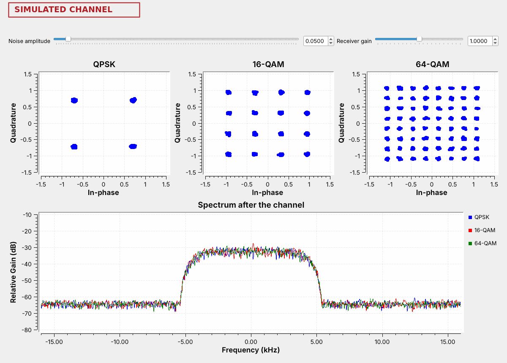
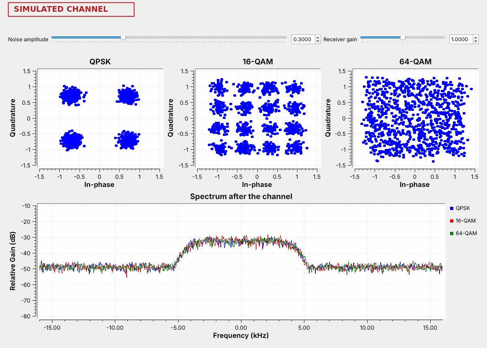
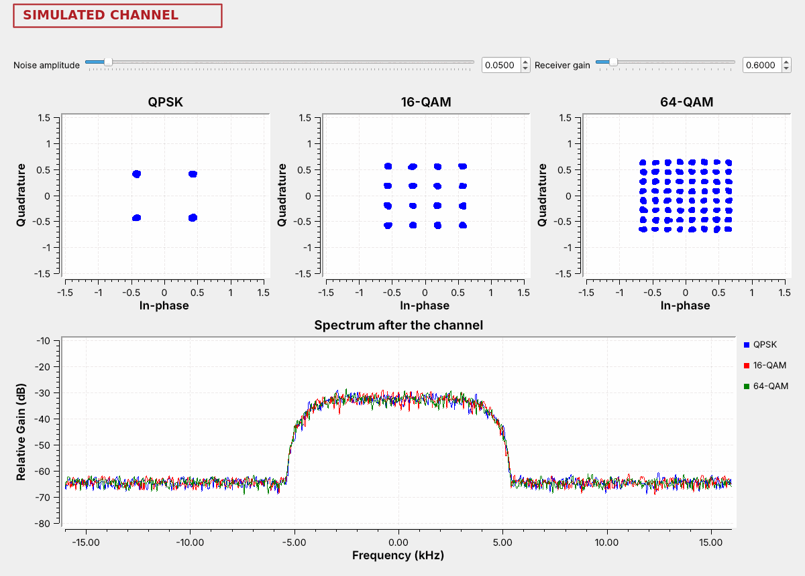
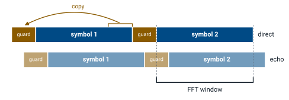
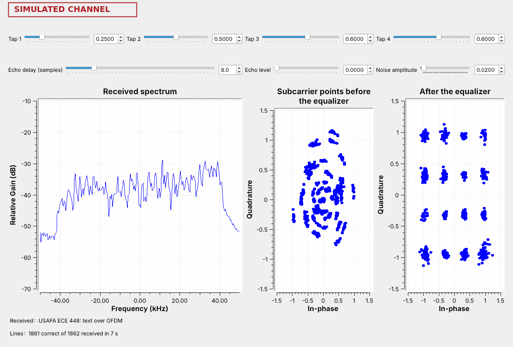
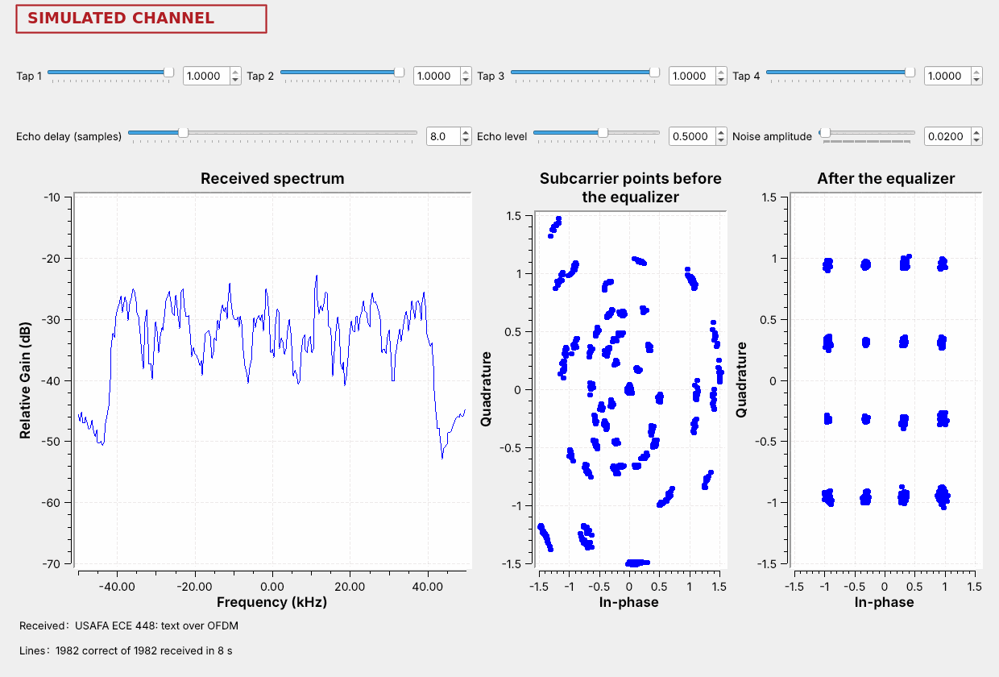
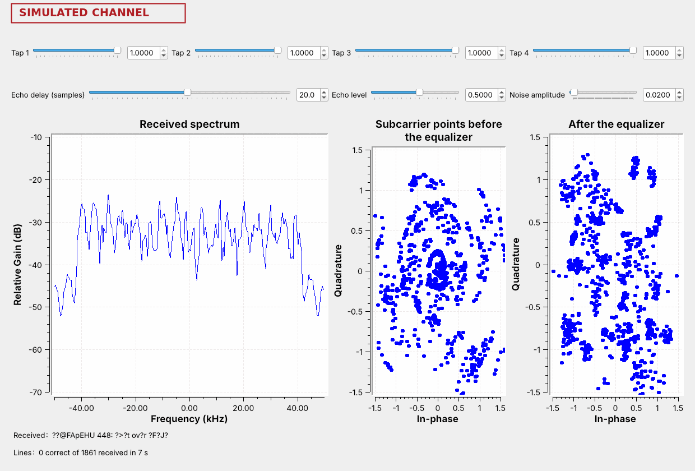
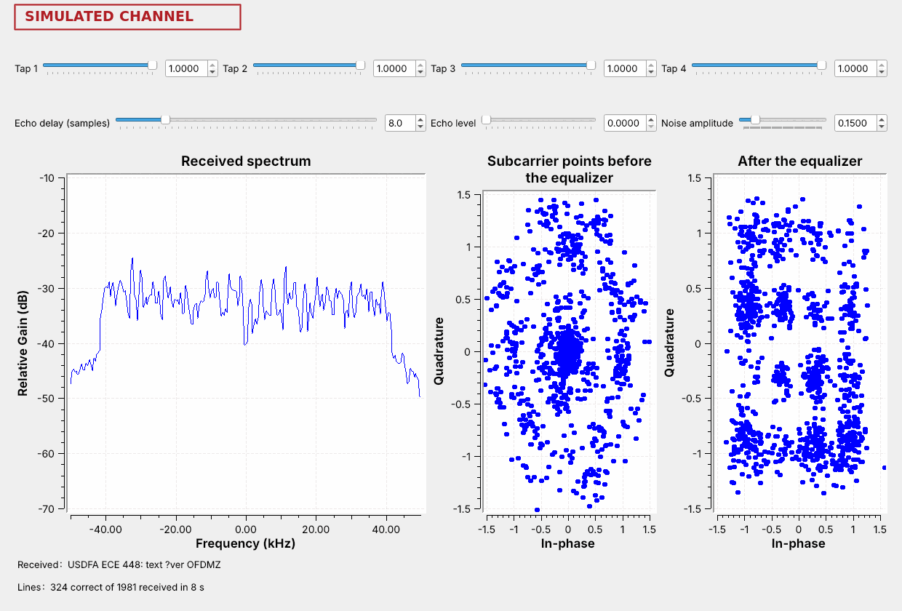

L20 - QAM and OFDM#
QAM and OFDM
QAM puts more bits on each symbol, OFDM spreads the symbols across many subcarriers, Wi-Fi and LTE use both, and HD Radio uses OFDM.
Lesson 20 · Module 7: Final Project · Dr. Neil Rogers
Slides
Learning Objectives
- I can describe QAM and OFDM and identify use cases for each.
Text over OFDM

Run
L20-ofdm-link.grc.The spectrum is a flat block with steep edges.
After the equalizer, the points form a 4 by 4 grid: 16-QAM.
The figure is today’s second flowgraph, L20-ofdm-link.grc, running. It sends a line of text as packets, and each packet travels as OFDM: 48 narrow subcarriers side by side, the idea Lesson 14 found beside an HD Radio station. Each subcarrier carries 16-QAM, a constellation of 16 points on a grid, so every symbol on every subcarrier carries 4 bits. The spectrum is the flat block of all 52 subcarriers, 48 for data and 4 pilots, the left constellation shows the subcarrier points as the receiver’s FFT delivers them, and the right one shows them after the receiver’s equalizer has corrected each subcarrier. The left points lie on rings because the receiver starts its FFT a few samples early, inside the guard, which turns each subcarrier by its own angle; the equalizer measures that turn and removes it.
Today we build both halves. We start with QAM on a single carrier, following GNU Radio’s constellation objects and Constellation Modulator block and PySDR’s Digital Modulation chapter, and we watch noise act on QPSK, 16-QAM, and 64-QAM. Then we follow the OFDM transmitter and receiver that ship with GNU Radio as the examples tx_ofdm.grc and rx_ofdm.grc, with the blocks of the GNU Radio wiki’s Basic OFDM Tutorial, and we put Lesson 15’s multipath channel and a longer echo in front of them. We finish with which systems use each one and how to recognize it on a live band.
From PSK to QAM

QAM sets both the amplitude and the phase of each symbol.
16 points carry 4 bits, and 64 points carry 6.
All three fill the same band.
Lesson 15’s PSK put every point on one circle, so only the phase carried data. Quadrature amplitude modulation (QAM) also uses the amplitude: the points fill a square grid, and each point is one level of \(I\) and one level of \(Q\). 16-QAM has 4 levels on each axis and 64-QAM has 8, so their symbols carry \(\log_2 16 = 4\) and \(\log_2 64 = 6\) bits. QPSK is the smallest grid, 2 by 2. Lesson 3 drew decision regions for PAM and PSK; on a QAM grid each point’s region is the square around it.
The figure is L20-qam-noise.grc with almost no noise. Each modulation sends 8,000 symbols per second through the same RRC filter as Lesson 15, with \(\alpha = 0.35\), so the spectrum below shows all three filling the same 10.8 kHz. At the same symbol rate, 16-QAM carries twice the bits of QPSK and 64-QAM three times as many.
Bits per Symbol
At 8,000 symbols per second, each modulation fills the same 10.8 kHz:
Modulation |
Points |
Bits per symbol |
Bit rate |
Spacing of neighboring points |
|---|---|---|---|---|
QPSK |
4 |
2 |
16 kb/s |
1.41 |
16-QAM |
16 |
4 |
32 kb/s |
0.63 |
64-QAM |
64 |
6 |
48 kb/s |
0.31 |
256-QAM |
256 |
8 |
64 kb/s |
0.15 |
The spacing column is for constellations scaled to the same average power, which is how GNU Radio’s built-in 16-QAM is scaled and how this flowgraph’s QPSK and 64-QAM objects are set, with Normalization Type set to Power, so all four reach the receiver with the same signal strength. Each step up the table adds 2 bits per symbol and roughly halves the distance between neighboring points. The QPSK and 16-QAM spacings can be read off the figure in the previous frame: QPSK’s points sit at \(\pm 0.71\), and 16-QAM’s at \(\pm 0.32\) and \(\pm 0.95\).
The QAM Flowgraph

A Constellation Object defines each set of points.
The Constellation Modulator maps bytes to points and shapes them.
One noise slider drives all three channels.
A Constellation Object block holds a constellation as a variable. GNU Radio has 16-QAM built in; the QPSK and 64-QAM objects list their points, \(\pm 1 \pm 1j\) and the 8 by 8 grid of odd numbers from \(-7\) to \(7\), and scale them to an average power of 1, as the built-in 16-QAM is. The Constellation Modulator takes bytes, splits them into groups of bits, maps each group to a point, and shapes the symbols with the RRC filter, 4 samples per symbol here. This is the block Lesson 15’s multipath flowgraph used for QPSK.
Each row then adds noise in a Channel Model and runs the receiver of Lesson 15: the matched filter and Symbol Sync. All three Channel Models take their noise amplitude from the same slider, so every constellation sees the same noise. The flowgraph has no frequency offset, so it needs no carrier recovery.
Noise on QAM

Raise the noise amplitude to 0.3.
The clouds grow by the same amount in every plot.
64-QAM’s points merge first, then 16-QAM’s.
The figure raises the noise amplitude from 0.05 to 0.3. The noise is the same in all three channels, and it spreads every point into a cloud of the same size. QPSK’s four points sit far apart, and its clouds stay well separated. 16-QAM’s clouds spread toward each other, and a stray point crosses into a neighbor’s region now and then. 64-QAM’s points sit closest together, and its clouds have merged into one square with no gaps, so the receiver picks wrong points constantly.
Every QAM link faces this tradeoff. More points carry more bits in the same band, but they sit closer together, so they need a cleaner signal. PySDR’s Digital Modulation chapter runs the same comparison with BPSK, QPSK, and 16-QAM.
QAM Explorer
The explorer sends the line USAFA ECE 448: QAM over and over with the chosen constellation and adds noise to every symbol. Its noise slider matches the Noise amplitude slider of L20-qam-noise.grc. Symbols that land in another point’s region are red, and the received text marks every wrong character in red. Start with 16-QAM at 0.1, then raise the noise until the text breaks; switch to 64-QAM and 256-QAM at the same setting, then back to QPSK.
Setting the Level

Set the Receiver gain to 0.6.
QPSK still decodes by quadrant, but 16-QAM’s outer points now sit where its inner points belong.
An AGC holds the level.
A PSK receiver ignores the amplitude, because every point sits on the same circle, but a QAM receiver cannot. The Receiver gain slider in L20-qam-noise.grc scales the received points, as a receiver with the wrong level would, and the figure sets it to 0.6. QPSK’s points shrink but stay in their quadrants, so a QPSK decoder still reads every one. 16-QAM’s outer points move from \(\pm 0.95\) to about \(\pm 0.57\), inside the lines at \(\pm 0.63\) that separate outer points from inner ones, so a decoder that expects the full-size grid reads every outer point as an inner one.
A real QAM receiver therefore runs an AGC to hold the average power where the constellation expects it, as the L15 Lab’s PlutoSDR flowgraph did, and its amplifiers have to stay out of compression, which would squeeze the outer points inward. Carrier recovery for QAM uses GNU Radio’s Constellation Receiver block in place of the Costas Loop, and a final project that sends QAM over a radio would start there.
From One Carrier to Many
OFDM sends many slow subcarriers side by side instead of one fast carrier.
Each subcarrier carries one QPSK or QAM point per OFDM symbol.
An inverse FFT builds each symbol, and an FFT separates the subcarriers again.
Lesson 14 met OFDM in HD Radio’s sidebands. Orthogonal frequency-division multiplexing divides a channel among many subcarriers spaced so that each one is zero at the centers of all the others, which lets the receiver separate them with an FFT. Each OFDM symbol is a list of constellation points, one per subcarrier: the OFDM Carrier Allocator places the points, an inverse FFT turns the list into time samples, and the OFDM Cyclic Prefixer adds the guard. HD Radio puts QPSK on its subcarriers; today’s link puts 16-QAM on them.
Many slow subcarriers have one large advantage over a single fast carrier. Each OFDM symbol lasts much longer than one symbol of a single carrier with the same total bit rate, so an echo a few samples late smears only a small part of it, and the guard absorbs that part. The next frames show this with Lesson 15’s multipath taps.
The OFDM Flowgraph
![L20-ofdm-link.grc in GNU Radio Companion: in the top row, a Vector Source of the text, Stream to Tagged Stream, Packet Header Generator, Additive Scrambler, Repack Bits, two Chunks to Symbols, Tagged Stream Mux, OFDM Carrier Allocator, a reverse FFT, and OFDM Cyclic Prefixer; in the middle row, Multiply Const, Tag Gate, Channel Model, Throttle, and a QT GUI Frequency Sink; in the bottom rows, Schmidl and Cox OFDM synch, Frequency Mod, Delay, Multiply, Header/Payload Demux, FFTs, OFDM Channel Estimation, OFDM Frame Equalizers, OFDM Serializers, Constellation Decoders, Packet Header Parser, Repack Bits, Additive Scrambler, the Text Sink, and two constellation sinks](../../viz/img/L20-grc-ofdm.png)
The transmitter is GNU Radio’s
tx_ofdm.grcwith 16-QAM.The receiver is
rx_ofdm.grc: synchronize, estimate the channel, equalize, decode.
The top row is the transmitter of GNU Radio’s tx_ofdm.grc example. Each packet gets a header in BPSK and a payload in 16-QAM; the Carrier Allocator places them on 48 data subcarriers with 4 pilot subcarriers of known value, and puts two known preamble symbols at the start of every packet. The FFT is 64 points and the guard is 16 samples, at 100,000 samples per second, so the subcarriers sit 1,562.5 Hz apart. The middle row is the channel: a Channel Model with Lesson 15’s four tap sliders, an echo, and noise.
The bottom rows are the receiver of rx_ofdm.grc. The Schmidl & Cox OFDM synch block finds the start of each packet from the first preamble symbol. The FFT of the second preamble symbol, whose values the receiver knows, gives the channel’s gain and phase on every subcarrier, which is the channel estimate. The OFDM Frame Equalizer divides each subcarrier by its gain and turns it back by its phase, and the decoders read the header and then the 16-QAM payload.
The Guard

The guard is a copy of the end of each symbol.
An echo shorter than the guard spills only into the next guard.
The guard interval, also called the cyclic prefix, is a copy of the last 16 samples of each symbol placed in front of it. The figure shows why it is there. An echo arrives 8 samples after the direct signal, so the end of its symbol 1 overlaps the start of the direct path’s guard for symbol 2. The receiver’s FFT window skips the guard (in this receiver, about 9 of its 16 samples; see two frames ahead), so it sees only symbol 2 from both paths: the direct one, and the echo’s copy, which is the same symbol turned and scaled. On each subcarrier that sum is one point with a new gain and phase, which the equalizer removes.
An echo later than the guard reaches past it into the FFT window, and part of symbol 1 lands in symbol 2’s FFT, where the equalizer cannot remove it. In the link flowgraph the guard lasts 16 samples, or 160 µs, and Lesson 14’s explorer showed the same effect with HD Radio’s guard.
Lesson 15’s Taps on OFDM

Set the taps to Lesson 15’s 0.25, 0.5, 0.6, and 0.6.
The spectrum tilts, but the equalizer restores the grid and the text arrives.
The four tap sliders use the expression of L15-psk-multipath.grc: each sets the channel’s gain at one frequency. At this flowgraph’s 100,000 samples per second those frequencies move outward, so Tap 1 now sets the gain near the lower edge, at \(-40\) kHz, and Taps 2, 3, and 4 sit at \(-20\), 0, and \(+20\) kHz, all inside the OFDM block. At Lesson 15’s settings the spectrum tilts, weak at the lower edge and strong at the upper one. Before the equalizer the subcarrier points are a jumble, because every subcarrier has a different gain and phase. After it, they form the 16-QAM grid again, and the text arrives.
Lesson 15 needed an adaptive equalizer, a filter that learned the inverse of the channel, to undo the same tap settings on a single QPSK carrier. OFDM needs only one complex number per subcarrier, measured from the preamble. The clusters for the weakest subcarriers come out a little larger, because the equalizer amplifies their noise along with their signal; with the noise amplitude at 0.05 the weak edge corrupts about half the lines.
An Echo Inside the Guard

Set the echo level to 0.5 at 8 samples.
The spectrum ripples, and the text still arrives.
The Echo delay and Echo level sliders add a second copy of the signal, delayed and weaker, like a reflection from a building. An echo 8 samples late at half the amplitude makes the spectrum ripple: the two copies add at some frequencies and partly cancel at others, eight times across the 100 kHz window. Each subcarrier lands at its own place on that ripple, so before the equalizer the points fall on many separate arcs.
The echo ends inside the 16-sample guard, so each subcarrier sees only a fixed change in gain and phase. The channel estimate measures it, the equalizer removes it, and every line arrives. A single-carrier link carrying the same bit rate in the same band would see each symbol smeared across its neighbors, as Lesson 15’s clusters were.
An Echo Past the Guard

Move the echo to 20 samples, longer than the 16-sample guard.
The grid scatters and no line arrives intact.
At 20 samples the echo is longer than the guard, and the end of each symbol’s echo reaches into the next symbol’s FFT window. That leakage acts like noise that the equalizer cannot remove, and the grid falls apart even though the noise amplitude has not changed.
The text breaks before the echo reaches the full 16 samples. The receiver starts its FFT window about 7 samples before the end of the guard, as a margin for its own timing error, which leaves about 9 samples of the guard for echoes. Step the echo delay up one sample at a time from 8 and watch where the lines start to fail. A real system chooses its guard to be longer than the echoes it expects, and the next frame lists some of those choices.
Systems That Use Each One
System |
On each subcarrier |
Guard |
|---|---|---|
Wi-Fi |
BPSK up to 4096-QAM |
0.4 to 3.2 µs |
LTE downlink |
QPSK up to 256-QAM |
4.7 µs |
DVB-T TV |
QPSK up to 64-QAM |
up to 224 µs |
HD Radio |
QPSK |
0.15 ms |
OFDM serves wireless systems that meet echoes: Wi-Fi indoors, LTE and 5G across a city, and digital TV and HD Radio across a whole region, where a guard of hundreds of microseconds covers reflections from kilometers away. A 20 MHz 802.11a or 802.11g Wi-Fi channel uses exactly the subcarrier layout of today’s flowgraph, 48 data and 4 pilot subcarriers in a 64-point FFT, at 20 million samples per second, so its subcarriers are 312.5 kHz apart. LTE uses 15 kHz, and 5G NR uses 15 kHz or a wider multiple of it. DVB-T is Europe’s digital TV; the newer US standard, ATSC 3.0 or NextGen TV, is OFDM too.
Single-carrier QAM serves channels with few echoes, such as cable TV and cable modems on coaxial cable, which carry 64-QAM and 256-QAM in 6 MHz channels (DOCSIS 3.1 moved cable modems to OFDM as well), and point-to-point microwave links between towers. Coaxial cable keeps the signal off the air, so an SDR antenna cannot receive it.
Choosing a Scheme

Echoes call for OFDM; a clean cable or a tower-to-tower link can use one carrier.
Noise sets how many points each subcarrier can carry.
The two choices answer different questions. OFDM or a single carrier depends on the channel’s echoes. The constellation depends on the noise: in the figure the noise amplitude is 0.15, the 16-QAM clouds touch, and most lines arrive with errors, where QPSK on the same subcarriers would still deliver them.
Wi-Fi and LTE make the second choice continuously. A receiver close to the access point or tower, with a clean signal, gets 64-QAM or more on every subcarrier; as it moves away and the signal weakens, the link steps down to 16-QAM, then QPSK, and adds more error-correcting code. PySDR’s Channel Coding chapter calls these combinations modulation and coding schemes. HD Radio, which must reach car radios at the edge of a station’s coverage, stays with QPSK.
On the SDR
Wi-Fi: short bursts at 2.4 GHz, mostly flat-topped and about 17 MHz wide.
LTE: a flat, steady band about 9 MHz wide near 740 MHz.
HD Radio: two flat shelves beside an FM station.
These signals are on the air around you, and the PlutoSDR shows their spectrum. We look only at the spectrum; we do not decode anyone’s traffic. L20-band-pluto.grc is a PlutoSDR Source with a frequency sink and a waterfall, a Center frequency control you change while it runs, and a Sample rate choice of 2 MS/s or 20 MS/s. It opens at 2 MS/s and 100.1 MHz. The course Plutos run from 70 MHz to 6 GHz, so all three signals are in range.
A Pluto streams about 4 MS/s continuously over USB 2.0, and a Wi-Fi channel is 20 MHz wide. At 20 MS/s the Pluto still fills each buffer of 131,072 samples without a break, 6.5 ms of signal, but the laptop cannot take the buffers as fast as they come, so samples are lost between them. The spectrum needs only a short unbroken stretch, so the displays still show the channel’s shape; they skip some of what happens between buffers.
At 2 MS/s, find an FM station near 100 MHz that carries HD Radio, and set the center frequency about 400 kHz to one side of it, so the Pluto’s own mark at 0 Hz stays off the station and both of Lesson 14’s flat shelves. If the whole spectrum rises and spreads, lower the RX gain.
Choose 20 MS/s and tune to 2.437 GHz, Wi-Fi channel 6, and watch the waterfall. Short bursts come and go. Those carrying data are OFDM: a flat top with steep edges about 17 MHz wide, often with a small dip at the center, where the subcarrier at 0 Hz is left empty. The Pluto marks its own 0 Hz too, so tune 2 MHz higher: the dip that moves with the channel is Wi-Fi’s. Some access points still send beacons in the older 802.11b format, which look rounded instead.
Still at 20 MS/s, tune between 729 and 756 MHz, where US carriers run LTE downlinks; which frequencies are in use varies by area. A 10 MHz LTE carrier shows as a flat top about 9 MHz wide with steep edges, and unlike Wi-Fi’s bursts it stays on.
At 2 MS/s, find the same LTE carrier. The window shows only a flat slice of it, so step the center frequency 2 MHz at a time to find both edges.
As in every lesson, receiving is unrestricted and transmitting is not; nothing in this lesson transmits.
Key Point
More QAM points carry more bits but need a cleaner signal. OFDM splits a channel into slow subcarriers with a guard, so an echo shorter than the guard becomes one gain and phase per subcarrier.
Downloads
L20-qam-noise.grc: random symbols in QPSK, 16-QAM, and 64-QAM through three Channel Models that share one noise slider, with the three constellations and their spectra. No hardware needed.
L20-band-pluto.grc: a PlutoSDR Source with spectrum and waterfall, a center frequency you change while it runs, and 2 MS/s or 20 MS/s. Receive only; needs a PlutoSDR.
L20-ofdm-link.grc: a line of text over OFDM with 16-QAM subcarriers, through Lesson 15’s four multipath taps, an echo, and noise, with the spectrum, the subcarrier points before and after the equalizer, and the received text. No hardware needed.
Open a .grc file from GRC’s File menu, or run gnuradio-companion L20-ofdm-link.grc from the radioconda prompt. To send QPSK on the subcarriers instead of 16-QAM, double-click the variable payload_mod, change it to digital.constellation_qpsk(), and run the flowgraph again. The Text Sink is an Embedded Python Block saved inside the .grc file.
What this lesson follows. L20 has no 2025 slides, so the GNU Radio examples and wiki lead, then PySDR:
GNU Radio’s OFDM examples
tx_ofdm.grc,rx_ofdm.grc, andofdm_loopback.grc, which ship with GNU Radio inshare/gnuradio/examples/digital/ofdm.L20-ofdm-link.grcistx_ofdm.grcandrx_ofdm.grcjoined, with a text source, a 16-QAM payload, and the Channel Model ofL15-psk-multipath.grc. It also differs from them in four smaller ways: it drops the CRC blocks, so a damaged line arrives with wrong characters instead of not at all; it scrambles each packet’s bits, as the OFDM Transmitter block does with Scramble Bits set to True, so the repeated text does not put the same point on the same subcarrier every time; its payload equalizer is the static one, which outputs the equalized points instead of its decisions, so the right-hand plot shows the noise; and it runs at 100,000 samples per second.GNU Radio wiki, Basic OFDM Tutorial: the OFDM Carrier Allocator, FFT, and OFDM Cyclic Prefixer.
GNU Radio wiki, Constellation Modulator and Constellation Object: the blocks of
L20-qam-noise.grc.PySDR, Digital Modulation for QAM, PySDR, Multipath Fading, whose OFDM section is a one-paragraph overview, and PySDR, Channel Coding for modulation and coding schemes.
GNU Radio wiki, PlutoSDR Source: the block behind
L20-band-pluto.grc.
Summary
Idea |
What it is |
In GNU Radio |
|---|---|---|
QAM |
points on a grid: amplitude and phase |
Constellation Object, Constellation Modulator |
Bits per symbol |
\(\log_2\) of the number of points |
16-QAM 4, 64-QAM 6, 256-QAM 8 |
Noise |
the same clouds; closer points merge first |
one noise slider on three Channel Models |
QAM receiver |
needs the level right and the carrier recovered |
AGC, Constellation Receiver |
OFDM |
many slow subcarriers, one point each per symbol |
Carrier Allocator, FFT, Cyclic Prefixer |
Guard |
a copy of each symbol’s end |
|
Equalizer |
one gain and phase per subcarrier, from the preamble |
OFDM Channel Estimation, Frame Equalizer |
Echo inside the guard |
a ripple the equalizer removes |
the text arrives |
Echo past the guard |
leakage between symbols |
the grid scatters |
Use cases |
OFDM: Wi-Fi, LTE, 5G, DVB-T, ATSC 3.0, HD Radio; single carrier: cable, microwave links |
Practice
Looking Ahead
The final project starts now: pick a signal, write success criteria, and build it.
Today’s two flowgraphs are starting points for a QAM or OFDM project.
L20 is the last lesson of the course. The rest of Module 7 is the final project, in which you choose a signal to build, receive, or decode, write the success criteria we will grade it against, and demonstrate it working. Every lesson’s flowgraphs are starting points, and today’s two are a direct route into a project on a modern waveform: send a file over L20-ofdm-link.grc through a PlutoSDR and a cable with an inline 30 dB attenuator and an AGC, add a 64-QAM payload by copying the qam64 Constellation Object from L20-qam-noise.grc into payload_mod, or measure the spectrum of the Wi-Fi and LTE bands around the Academy.